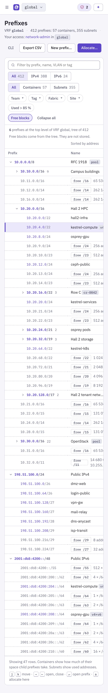
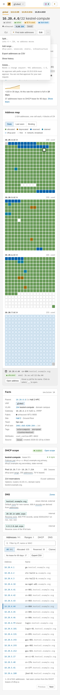
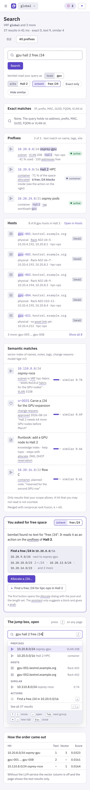

This chapter specifies the web UI pages for daily addressing work. They are Overview, Prefixes, the prefix page with its address map, the Allocate dialog, the address drawer, Hosts, the host page, Reports and Search. The shell and the rules for all pages are in the Web UI chapter.
Idempotency-Key.title names the missing permission.A domain has a colour (addr indigo, dns teal, dhcp blue, assets slate, access plum, integ ochre). The colour marks a domain and never a state.
The Overview is the landing page. It tells the user what needs action now, in work order, and it shows the state of the address space. The lead of the design record owns this mockup. This section only describes it.
| Part | Content |
|---|---|
| Needs you | One numbered list of six items (next table). Each item has a kind word, one sentence, one or two buttons and a small code. |
| Address space | A table of the containers with VRF chip, team, fabric, number of subnets and a utilisation meter. A segmented control switches IPv4 and IPv6. The link "All prefixes" opens the Prefixes page. |
| Side cards | Three cards. Exports: per DNS and DHCP target, the last pull, the bundle id and the check result. Sources and syncs: FNT, OpenStack, Kubernetes, libvirt, ONA. Recent changes: from the audit log. |
| Page head | The CLI toggle holds bembel status. "Brief me" is an advisory button of the assistant. "Allocate…" is the one filled button. |
| No. | Item in the story |
|---|---|
| 1 | Change request to delete 10.20.16.0/22 with 3 child subnets. The user is approver in scope. |
| 2 | The BIND export diff of the parallel run. |
| 3 | Subnet 10.20.4.0/22 at 92 %, with the button "Find stale addresses". |
| 4 to 6 | Unmatched FNT devices, expiring claims and the ONA import findings. |
/GET /v1/prefixes?prefix_kind=container for the table, GET /v1/change-requests?state=pending, GET /v1/exports, GET /v1/sources, GET /v1/audit-events?page_size=4 (only events on objects the user can read), GET /v1/events/stream (SSE)bembel status, bembel change ls --state pending, bembel prefix ls --vrf global --used-above 85
10.20.4.0/22 is selected. Dashed rows are free blocks.
The page shows the prefix tree of one VRF as an indented table. A user finds a prefix, sees how full it is, and sees where space is free. It replaces the ONA subnet list and the ONA "block" view, where free ranges were a separate page.
| Part | Content |
|---|---|
| Head | Title, the VRF, the count ("412 prefixes: 57 containers, 355 subnets") and the role of the user. Buttons: CLI toggle, Export CSV, New prefix…, and the filled Allocate…. |
| Search | A field filters the loaded rows by prefix, name, VLAN or tag. A search for a prefix such as 10.20. opens the ancestors of each match. |
| Family and kind | Two segmented controls: All, IPv4, IPv6 and All, Containers, Subnets. Each shows a count. |
| Chips | Team, Tag, Fabric and Site open a picker. "Used > 85 %" is a toggle. A chip with a value shows the value and a small cross. |
| Free blocks | A toggle, on by default. It shows or hides the dashed rows. |
Each row has these cells: caret, prefix, name, kind, status, VLAN, fabric, site, team, source badge and a utilisation meter with a number. The prefix is a link to the prefix page. The row of the prefix that is open in the next page is selected.
| Column | Content | Note |
|---|---|---|
| Prefix | Caret and value. Indent is 22 px per level. | A closed caret shows the number of children. |
| Status | active is calm text with a green dot. planned, reserved and deprecated are pills. | A pill marks a state that needs a look. The normal state is quiet. |
| Used | For a subnet: used addresses divided by usable addresses. For a container: the share of its space that child prefixes take. | The meter is green below 70 %, amber from 70 to 90 %, red above 90 %. The mockup shows 92 % for 10.20.4.0/22. |
| Fabric | ethernet, ethernet-roce or infiniband, with a small mark. | InfiniBand has a round mark, RoCEv2 a blue square. |
| Source | Badge. | Hidden first when the page is narrow. |
A free block is a CIDR block of the parent that no child covers. The server computes the blocks from the tree. They are not stored, so they are never out of date. The algorithm splits each gap into the fewest aligned blocks.
In the story, 10.20.0.0/16 has the children 10.20.0.0/22, 10.20.4.0/22, 10.20.8.0/24 and 10.20.12.0/24. Between them the tree shows 10.20.9.0/24 and 10.20.10.0/23 as free, then 10.20.13.0/24 and 10.20.14.0/23. Each free row has the link "Allocate…". The link opens the Allocate dialog with this block as the target.
| State | The page shows |
|---|---|
| Empty | A new install shows "No prefixes in VRF global" with two buttons: "New prefix…" and "Import from ONA". A filter with no result shows "No prefix matches. Clear the filters." with the filters named. |
| Loading | The server sends the first two levels. A caret loads the children when it opens (GET /v1/prefixes?within=…&depth=1). A row shows a thin bar while it loads. |
| Error | A problem document (application/problem+json) shows as a banner with its title and detail and a "Try again" button. |
| No permission | A user with no prefix:read in a subtree does not see it. The tree shows no gap and no count for it. "New prefix…" and "Allocate…" are disabled with a reason when the user has no prefix:create or prefix:allocate. |
/prefixes?vrf=global&family=4&prefix_kind=subnet&team=hpc-ops&tag=role%3Dcompute&used_gt=85&free=1&q=GET /v1/prefixes?vrf=global&within=10.20.0.0/16&depth=1, GET /v1/prefixes/{id}/free, GET /v1/vrfsbembel prefix ls --vrf global --tree --free, bembel prefix ls --used-above 85 --family 4, bembel prefix export --format csv
10.20.4.0/22 kestrel-compute at 92 %. The ⋯ menu is open: Delete… says that it needs a change request.
The page is the home of one subnet. It answers four questions: what is this network, how full is it, which address is free, and what does each address do.
The breadcrumb is the chain of parents: global › 10.0.0.0/8 › 10.20.0.0/16 › 10.20.4.0/22. The title is the prefix and the name. Pills show the kind, the status, the utilisation, "dual stack", the fabric, the VLAN and the source. The buttons are:
| Button | Place | Permission | Note |
|---|---|---|---|
| Allocate address… | filled | address:allocate | Opens the Allocate dialog with this prefix. |
| Edit | outline | prefix:update | Name, status, VLAN, site, team, tags. Not the CIDR. |
| ✦ Find stale addresses | quiet | address:read | Advisory. Lists addresses with no DHCP lease, no DHCP ACK and no other sign for 90 days. Never lists a claimed address or an address of a managed source. The mockup finds 37. |
| ⋯ Split…, Add range…, Export, History | menu | by item | Split cuts the subnet into 4 × /24 and moves no address. |
| ⋯ Delete… | menu | prefix:delete | The line under it says "Needs a change request: 941 addresses, 1 DHCP scope". A delete of a prefix with children or addresses is always held (change requests). |
The card has one large number (92 %), the counts, one stacked bar and a legend. The bar has six parts in a fixed order. The sum is 1 022, the usable addresses of a /22 (the network and broadcast address are not counted).
| Part of the bar | allocated | deprecated | reserved | claimed | dhcp-pool | free |
|---|---|---|---|---|---|---|
| Addresses | 635 | 6 | 38 | 7 | 255 | 81 |
prefix_usage_daily.The map draws every address of the subnet as one square cell. A /22 has 1 024 cells in 4 blocks, one per /24. A block has 16 rows of 16 cells.
The cell of an address with offset n in its /24 is in row n ÷ 16 and column n mod 16. The address 10.20.4.44 has offset 44: row 2, column 12 of block 1.
| Part | Behaviour |
|---|---|
| Colours | The colour is the state (table below). A colour is never the only signal: the legend is in the card, and each cell has a title. |
| Hover | A cell has a title such as "10.20.4.44 · cn-004.kestrel.example.org · allocated". A real build shows a small card with the host, the interface and the last seen time. |
| Select | A click selects a cell. A ring marks 10.20.4.44 in the mockup. A bar under the map shows the address, name, state and MAC, with the button "Open address". The key ↵ opens the drawer. Arrow keys move. |
| Colour by | A segmented control changes the colour rule. State is the default. Last seen is the age of the last DHCP lease or DHCP ACK, from fresh to stale. Binding is bound to an interface or not. |
| Free runs | The cells of a free run are next to each other. In block 3 the run 10.20.6.180 to 10.20.6.254 (75 addresses) is at the bottom left. A user picks an address from it with the hint strategy. |
| State of the cell | Colour |
|---|---|
allocated | green |
deprecated | amber |
reserved | blue |
claimed | indigo |
range dhcp-pool | light blue with a border |
| free | empty cell with a border |
| network and broadcast | grey |
| Card | Content |
|---|---|
| Facts | Parent, VRF, VLAN (204, domain campus-hall2), gateway 10.20.4.1. Fabric campus with MTU 9000, site Hall 2, team hpc-ops. IPv6 twin 2001:db8:4200:204::/64. Tags, attributes, source and revision (the ETag of the object). |
| DHCP scope | State on, lease time, failover pair dhcp-a (dhcp1.example.org primary, dhcp2.example.org secondary). The pool 10.20.7.0 to 10.20.7.254 with 143 leases. The number of reservations (641) and the options. |
| DNS | The default zone kestrel.example.org, the reverse zones 20.10.in-addr.arpa and the zone of the IPv6 twin, with the number of derived records and the serial. |
The tabs are Addresses (941), Ranges (3), DHCP, DNS and History.
The Addresses tab has a filter bar and a table. The filter bar has a search, state segments and "No lease for 90 days". The table has the columns Address, Name, Host, Interface, MAC, State, Last seen and Source.
"Last seen" comes from the DHCP leases and the DHCP ACK lines of the server log, as the DHCP agents report them. A static address has the word "static".
The mockup shows 19 rows:
cn-001 to cn-006;10.20.4.99 (VIP of login);cn-091 from a.berger and vm-ci-03 from libvirt:hv-03;| State | The page shows |
|---|---|
| Empty subnet | The map shows only empty cells. The card says "No address yet. Allocate the first address." with the filled button. |
| Container | A container has no map. The page shows its children and its free blocks, as the tree does, and "Allocate…" opens the pool variant. |
| Managed prefix | A prefix with managed_by (for example from openstack:os-prod) shows a banner "Managed by openstack:os-prod. Edit it there." The edit buttons are disabled. |
| No permission | A viewer sees the page with all buttons disabled. A user with no address:read sees the counts and no names. |
| Error | A call that fails shows a banner in the card that it affects. The other cards stay. |
/prefixes/{id}[?tab=addresses&status=claimed&stale=90][&address=10.20.4.44]GET /v1/prefixes/{id}, GET /v1/prefixes/{id}/addresses?status=&q=&stale_days=, GET /v1/prefixes/{id}/free, GET /v1/ranges?prefix_id={id}, GET /v1/dhcp-scopes?prefix_id={id}, DELETE /v1/prefixes/{id} (held as a change request)bembel prefix show 10.20.4.0/22, bembel address ls --prefix 10.20.4.0/22 --status allocated, bembel prefix stale 10.20.4.0/22 --days 90
10.20.4.0/22. The preview shows 10.20.4.213, because 10.20.4.212 went to cn-621 at 17:52.The dialog does the allocation (allocation). It asks for the least that bembel needs, shows what will happen, and saves it in one call. The dialog is modal, with a dark scrim. The safe button (Cancel) is on the left of the action. The body scrolls, so the title and the buttons stay on screen.
| Field | Content | Why |
|---|---|---|
| Parent prefix | A picker. It shows the prefix, the name, the free count (81), the VLAN, the site, the DHCP scope, the zone and the team. It lists only subnets where the user has address:allocate. | The user sees at once if the choice is right. |
| Count | 1 to 64. | A batch is one call, one transaction. |
| Strategy | first (default), hint or random. Hint takes an address and moves up to the next free one. Random is only for IPv6. | First free keeps the space dense. Random avoids scans in a /64. |
| DNS name | A label (cn-622) and a zone suffix list (.kestrel.example.org, .example.org). The default is the zone of the subnet. | The name drives the A, AAAA and PTR records. |
| Host | Existing host or New host. A new host has the kind physical and the team of the subnet. | One dialog creates the host, the interface and the address. A user does not need three pages. |
| Interface and MAC | Name (eno1) and MAC (3c:ec:ef:7a:10:22). | The MAC is the key of the DHCP reservation. |
| Make a DHCP reservation | On when the subnet has a scope and a MAC is given. | Most fixed hosts need it. |
| Claim only (expires in 10 min) | Off by default. The call sends "claim_ttl": "PT10M". A claim has no records and no reservation. After 10 minutes without a confirm the address goes back to free. | A claim holds the address until a caller confirms it. This is the way of the Neutron driver and bembel vm prepare. A user can hold an address while a ticket runs. |
The preview box has a blue frame and the title "Preview, nothing is saved yet". It shows the first free address, 10.20.4.213, the name, and three lines:
internal (zones kestrel.example.org and 20.10.in-addr.arpa);dhcp-a;The preview calls GET /v1/prefixes/{id}/free. It is a hint and not a reservation. Another user can take the address before the click. The real call picks the address again on the server.
The second tab allocates a child prefix. The preview shows 10.30.64.0/26 and says where it starts.
| Field | Content |
|---|---|
| Pool | A container with the tag pool, here 10.30.0.0/16 OpenStack with 44 % used. |
| Length | /24 to /28, here /26 with 62 usable addresses. |
| Count and name | A count and a name. |
| Kind and status | Here subnet and planned. |
| Team and VLAN | The team, and an optional VLAN. |
409 prefix.exhausted and the dialog shows the largest free block.| Part or case | The dialog shows |
|---|---|
| Footer | The left text names the permission of the open tab. Tab Address: "Needs address:allocate. You have network-admin in global." Tab Prefix from a pool: "Needs prefix:allocate. You have network-admin in global." Buttons: Cancel, Preview again, Allocate (filled). |
| CLI | The body ends with the command and a copy button: bembel address allocate --prefix 10.20.4.0/22 --name cn-622.kestrel.example.org --mac 3c:ec:ef:7a:10:22 --reservation. |
| Validation | A field with an error shows its text under the field. A name that exists says "cn-622.kestrel.example.org exists as a host. Choose Existing host." A MAC that another interface has says which interface. |
| Subnet full | The preview says "No free address in 10.20.4.0/22" and offers the IPv6 twin and the next subnet of the same VLAN. The Allocate button is disabled. |
| No permission | The dialog does not open. The button that would open it is disabled with the reason. |
| Server error | The dialog stays open, shows the problem, and keeps the same key. A retry cannot double the allocation. |
/prefixes/{id}?dialog=allocate, /prefixes/{pool_id}?dialog=allocate-prefix&length=26POST /v1/prefixes/{id}/addresses:allocate with Idempotency-Key, POST /v1/prefixes/{id}/prefixes:allocate, GET /v1/prefixes/{id}/free, GET /v1/hosts?q=bembel address allocate --prefix … --name … --mac … --reservation [--claim-ttl 10m], bembel prefix allocate --pool 10.30.0.0/16 --length 26 --name os-tenant-ml
10.20.4.44. The page stays usable on the left. The button "Add record…" is enabled: d.klein has record:create through network-admin.The drawer shows everything about one address in one place and lets the user act on it. It opens on the right, under the top bar, and the prefix page stays visible. Opening a drawer does not leave the page. The URL has ?address=10.20.4.44, so the link works.
| Part | Content |
|---|---|
| Head | The address with a copy button. Pills for the state (allocated) and the family. A close button. A line with the prefix, the source and the revision. |
| Binding | Host cn-004.kestrel.example.org (a link to the host page), interface eno1 on VLAN 204, MAC 3c:ec:ef:12:0a:44. Kind: single, or shared for a VIP on several interfaces. The IPv6 twin 2001:db8:4200:204::44. The last seen time and the DHCP server that saw it. |
| Derived records | A, AAAA and PTR with name, data and TTL, for view internal. A note says that bembel makes these records from the name, and that the user changes the name to change them. Manual records are on the zone page. |
| DHCP reservation | The fixed address, the hardware address, the host name and the delivery target (dhcp-a, bundle b-7c41e0). |
| Asset | A small rack picture with the device in U10–11 of Rack A01. Then rack, position and device (links to their pages), the serial SN7K4-0042 and the match rule. The badge fnt and the sync time show the source. |
| History | The audit events of this address as a timeline. Oldest: "import imp-20261023-0131 created it from ONA (ona:hosts:8812)" on 2026-10-23 01:31, with the binding to eno1 and the reservation. Then "sync fnt updated the device link" on 2026-11-03 03:00 (full reconcile). |
| VPN sessions | For an address in a vpn-pool range: the sessions of the last 24 hours with user, profile, start and end. A user without vpn-session:read sees only the count (VPN sessions). |
| Actions | Edit, Move…, Release… (red outline), Add record… and a ⋯ menu. Move… changes the subnet and runs the same checks as an allocation. Release… asks for a confirmation and says what it removes: 3 records and 1 reservation. |
| State | The drawer shows |
|---|---|
claimed | A banner with the expiry time and the owner (a.berger for 10.20.4.131, cn-091). No DNS and DHCP parts. |
deprecated | The grace time and "Release now…". |
shared | All bound interfaces. |
| Managed | An address of an OpenStack port shows a lock and no edit buttons. |
| Not found | A link to an address that someone released says "10.20.4.44 is free now" and shows the last history entry. |
/prefixes/{id}?address=10.20.4.44GET /v1/addresses?address=10.20.4.44, GET /v1/audit-events?resource_kind=address&resource_id={id}, PATCH /v1/addresses/{id} (with If-Match), POST /v1/addresses/{id}:release, POST /v1/me/permissions:checkbembel address show 10.20.4.44, bembel address release 10.20.4.44
The list has 41 023 hosts (the size after import run imp-20261104-0912). 28 of them are on this page.
| Part | Content |
|---|---|
| Columns | Host, Kind, Platform, Addresses, Interfaces, Asset, Team and Source. Addresses has one line per address and a chip for a VRF other than global. Asset has the rack and U position, with a link to the rack page. |
| Filter bar | A search and a kind control (Physical, VM, Hypervisor, Appliance). Chips for platform, team, source and site. Two more chips: "No asset link" (1 318) and "No address" (212). |
| VM row | The hypervisor under the name: vm-build-07 runs on hv-03, address 10.20.20.37 claimed, expires in 15 h. |
| Hypervisor row | The agent version and the number of VMs. |
| BMC entry | The BMC entries from the ONA import show "merge candidate", because they share a MAC family with a host. |
| Buttons | Prepare VM… (the bembel vm prepare flow), New host… and Export CSV. |

cn-004.kestrel.example.org: three interfaces in three VRFs.The host page has the parts below. The first is the interface table.
| Interface | Hardware | Addresses | Network |
|---|---|---|---|
eno1 | Ethernet, MAC 3c:ec:ef:12:0a:44 | 10.20.4.44, 2001:db8:4200:204::44 | VLAN 204 |
ib0 | InfiniBand, port GUID 0c42a1030071a2b4, the 20-byte IPoIB hardware address, the LID (observed, read only) | 10.100.4.44 | VRF hpc-fabric, partition 0x0001 |
bmc | MAC 3c:ec:ef:12:1a:44 | 172.16.4.44 | VRF oob |
The column Port shows the switch port that the asset sync found.
| Part | Content |
|---|---|
| DNS names | The derived A, AAAA and PTR records, the name of the other interfaces and one manual CNAME (node44, imported from ONA). |
| DHCP reservations | One row per interface with a reservation: scope, fixed address, identifier and the sync state with dhcp-a. The identifier is the MAC, or for ib0 the client identifier made from the GUID. |
| Asset | A rack picture (47 U) with the 2U device in U10–11 marked. Rack A01, Hall 2 Row A, serial SN7K4-0042, the link rule. Buttons: Open rack and Open device. The picture links to the rack page. |
| History | The audit events of the host and its interfaces. |
| State | The page shows |
|---|---|
| No asset link | "No asset link" and, when the sync has candidates, a button "Review matches". |
| VM host | "Runs on" with a link to the hypervisor. No rack card. |
| Managed host | A host from libvirt:hv-03 has a lock. The edit buttons are disabled. |
/hosts?host_kind=hypervisor&team=&source=, /hosts/{id}GET /v1/hosts, GET /v1/hosts/{id}, GET /v1/hosts/{id}/interfaces, POST /v1/hosts, PATCH /v1/hosts/{id}bembel host ls --kind hypervisor, bembel host show cn-004.kestrel.example.org, bembel vm prepare --name vm-build-07 --subnet kestrel-services --mac autoThe lists of hosts, addresses and records have a checkbox in each row. A selection opens a bar over the table: "38 hosts selected", with Set team…, Set tags…, Add note…, Move… and Delete…. The Import… button in the page head opens the import dialog.
fqdn, prefix, mac, interface, owner, tags).validate_only and shows the plan. Each line is one row with the action (create, update, none), the changed fields and the findings. A row with an error is red and has the reason.bembel apply -f rack-a04.csv.A bulk edit from the selection bar uses the same plan step. The rule of plan and apply applies to both.
/hosts?import=1POST /v1/hosts:batchCreate, POST /v1/hosts:batchUpdate (with validate_only, then plan_hash)bembel apply -f rack-a04.csv --plan-onlyThe page Reports lists the fixed reports: utilisation, stale addresses, hosts without asset, records outside views, expiring. Each report is a table with the filters of the report and a CSV button. The utilisation report draws one line for each container over the selected time (reports).
/reports/utilisation?group=team&since=365dGET /v1/reports/utilisation?group=team&since=365dbembel report utilisation --group team -o csv

One box finds an address, a prefix, a MAC, a host, a zone or a page, and it also takes a short description. The jump box in the top bar (key /) shows the best hits while the user types. Shift ↵ opens this page with all hits.
The parser splits the query into tokens and tests each token as an IP, CIDR, MAC, GUID, FQDN or VLAN id. An exact token goes straight to the object, and the page opens it for a single hit. The other tokens go to the full-text index. With the vector part on, the whole query also goes to the embedding.
The parser also knows a few filters in words: a site name ("Hall 2"), a team, a VRF and an intent such as "free /24". The page shows its reading as chips under the field, so the user can check it: term gpu, site Hall 2, intent free /24. A chip can be removed.
| Group | Content in the story |
|---|---|
| Exact matches | None: the query has no address, MAC or FQDN. The card says so in one line. It stays, so the user sees that the exact step ran. |
| Prefixes | 10.20.8.0/24 osprey-gpu, 10.20.0.0/16 Hall 2 HPC and 10.20.24.0/21 osprey pods. The words that matched are marked. |
| Hosts | gpu-001 to gpu-005, with 3 more behind "Show all 8". |
| Semantic matches | Hits that the vector index found (list below). Each hit has a small bar and the value "similar 0.74" (a cosine similarity). A line says which model made the vectors (bge-m3). |
10.110.8.0/24 osprey-roce ("400G RoCEv2 fabric for the GPU nodes").cr-0031 ("Carve a /24 for the GPU expansion").10.20.16.0/22 Hall 2 row C.The words "free /24" are not text. bembel reads them as an intent and shows an action card: "Find a free /24 in 10.20.0.0/16". The card lists the first blocks (10.20.9.0/24 next to osprey-gpu, 10.20.10.0/23, 10.20.13.0/24, 10.20.14.0/23) and has two buttons:
The card "The jump box, open" draws the popover that hangs under the field in the top bar. The groups are Prefixes, Hosts, Similar and Actions. The first row is selected. A footer lists the keys: ↑ ↓ move, ↵ open, Tab next group, ⌘ ↵ new tab, Esc close.
The last card shows the rank of each hit in the two lists and its fused score (1/(60+rank) added over the lists). It helps the admin who asks why a hit is first.
| State | The page shows |
|---|---|
| No hit | "Nothing matches 'gpu hall 2 free /24'. Try fewer words." The page offers the chips to remove and the nearest page by name. |
| Vector part off | The group "Semantic matches" is not in the HTML. A small note says "Similar search is off. The LLM service does not answer." |
| No permission | A hit the user may not read is not in the list and not in the count. The page never says "3 hits hidden". |
| Error | A banner with the problem title. The groups that did answer stay. |
/search?q=gpu+hall+2+free+%2F24[&kind=prefix,host][&similar=0]GET /v1/search?q=…&limit=… (groups with hits, parse result and timing), GET /v1/prefixes/{id}/free?length=24, POST /v1/me/permissions:checkbembel search 'gpu hall 2 free /24', bembel prefix free 10.20.0.0/16 --len 24